Branca de Neve é uma jovem de 14 anos, extremamente bonita, que causa inveja na Rainha pela sua beleza única e também por sua formosura. Com "lábios vermelhos como sangue, cabelo negro como ébano e pele branca como a neve". Ela tem um corpo esbelto e pés delicados.
Cinderela
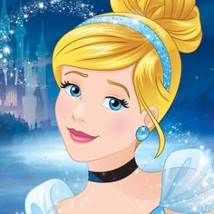
Cinderela é uma garota forte e independente , que é verdadeiramente bela porque ela não deixa sua raiva e tristeza tirar o melhor da vida. Ela não é ingênua ou infantil. Ela é extremamente madura e mostra que pode superar seus obstáculos sem a ajuda de magia.
Bela
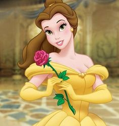
Francesa, bela, sincera, confiante, valente, generosa, adora ler, extremamente inteligente, gosta de livros e filosofia, sábia, original, amorosa, vê bondade em todos.
Aurora
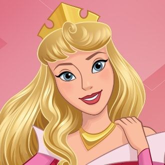
Aurora é frequentemente descrita como tímida e sofisticada, bem como uma romântica incurável. Ela é bastante ingênua e insegura, como resultado de ter sido protegida na maior parte de sua vida, não podendo se comunicar com nenhuma pessoa além de suas madrinhas quando vivia como camponesa.
Moana
Moana é uma adolescente aventureira de 16 anos de idade que é a filha única do Chefe Tui. Desde pequena, avó Tala lhe conta as histórias e feitos dos povos da Polinésia, como eles navegaram por milhares de anos pelo oceano Pacífico povoando as ilhas que encontraram. Inspirada por essas histórias, Moana decide seguir os passos de seus ancestrais e navegar pelo oceano também.
Tiana
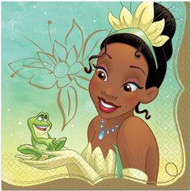
Tiana é uma bela jovem de 19 anos com herança afro-americana. Ela é alta e delgada, com uma figura esculpida, tem cabelos de comprimento médio preto geralmente amarrados em um rabo de cavalo baixo, olhos castanhos e um sorriso brilhante.
Ariel
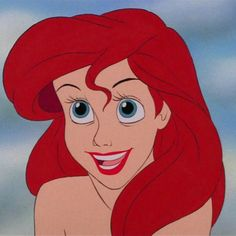
Ariel é uma sereia aventureira e teimosa. Sua curiosidade e amor pela aventura, às vezes deixa ela em apuros. Geralmente, entretanto, Ariel supera qualquer obstáculo que enfrenta. Seu melhor amigo é um peixe chamado Linguado, e ela desenvolve uma relação próxima com um caranguejo chamado Sebastião.
Pocahontas
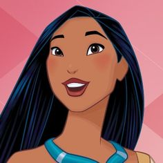
Pocahontas é mostrada como uma mulher altamente espiritual. Ela expressa uma sabedoria além de seus anos e oferece carinho e orientação para aqueles ao seu redor.
Mulan
Mulan é uma personagem típica dos papéis femininos dos filmes da Disney, ela é corajosa e desastrada, mais auto-suficiente, e não se concentra em casamento. Ela não se encaixa com as expectativas de uma jovem chinesa da época, apesar de sua beleza, ela é desajeitada, sem rodeios, silenciosa e recatada.
Jasmine
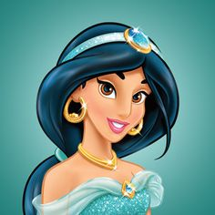
Jasmine é de espírito livre, e em muitos aspectos se assemelha a uma "rebelde princesa". Ela é teimosa, e anseia pela liberdade que as outras meninas têm.
Merida
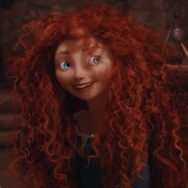
Rebelde e aventureira, dona de excelente pontaria e agilidade, muito engenhosa e criativa, gosta de contar histórias de batalha aos irmãos e de tortinhas de geleia. O urso demoníaco Mor'du, que assola as misteriosas florestas do reino e carrega por todo o corpo flechas de guerreiros que derrotou.
Rapunzel
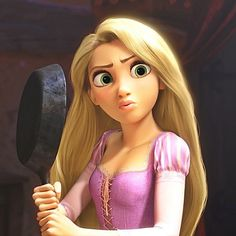
Alegre, aventureira, sonhadora, criativa, feliz, bondosa, carismática, confiável, ousada, espontânea, divertida, adora artes, é uma desenhista talentosa, inteligente.
Fiona
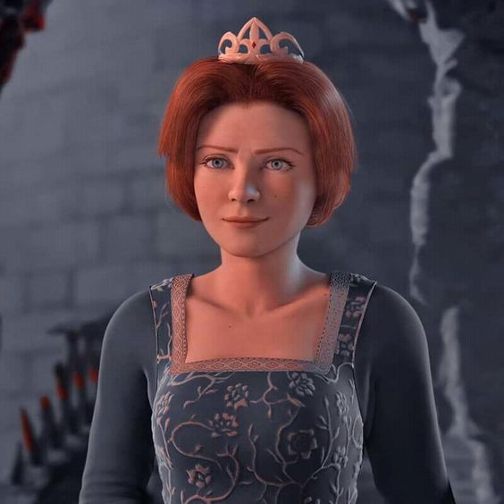
Resultado de imagem para fiona descrição
Ainda que os filmes sejam centrados na figura de Shrek, é importante entender que Fiona é uma mulher incrivelmente corajosa. Ela decide constantemente qual é o rumo de sua vida, sem medo de mudanças.
Elsa
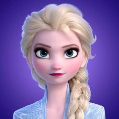
Elsa aparenta ser equilibrada, majestosa e reservada, mas na realidade vive com medo de um importante segredo: nasceu com o poder de criar gelo e neve, uma habilidade deslumbrante mas também extremamente perigosa.
Anna
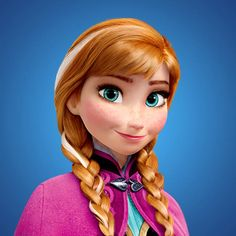
Ela é a irmã destemida, corajosa, e inocentemente estranha da poderosa rainha da neve Elsa, e embarca em uma perigosa jornada para salvar seu reino de um inverno eterno.
Vanellope
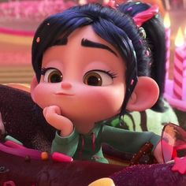
Vanellope não deixa de ser frágil há sua maneira, mas esconde-o bem por ser ousada, e pela forma como leva a vida descontraidamente. Vanellope estará sempre pronta para a diversão.